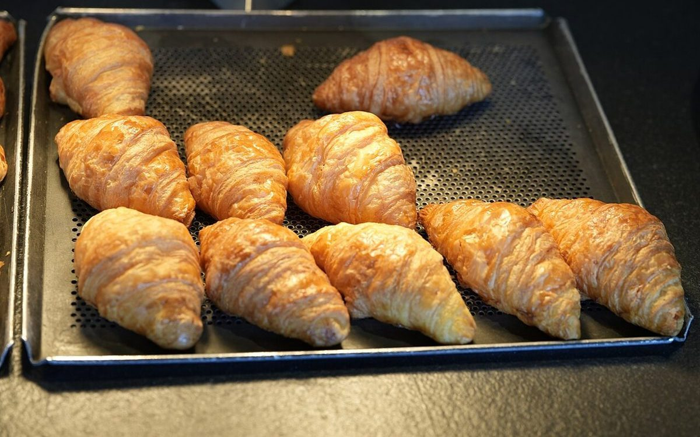
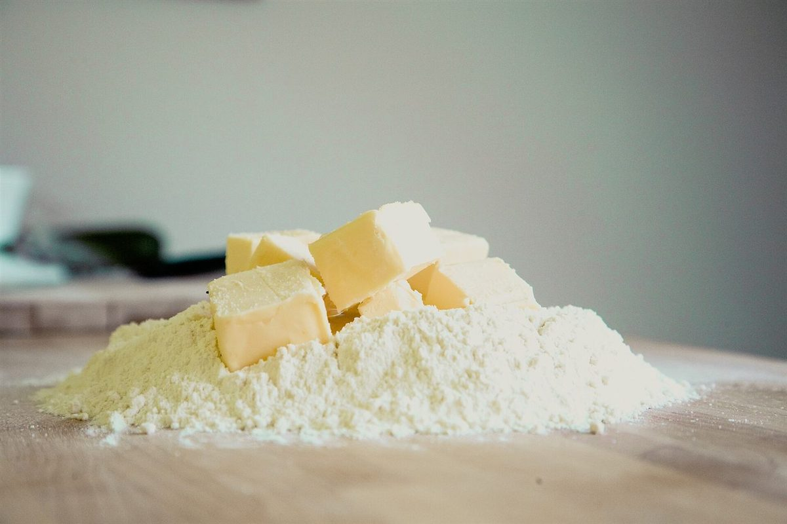

メニュー
商品の内容・価格は現在準備中(お問い合わせください)。ご来店前にお電話かInstagramでご確認ください。





上の写真はすべてイメージで、実際の商品ではありません。
掲載の写真はフリー素材のイメージで、店舗の実際の写真ではありません。他地域で撮影されたものや撮影地が不明なものを含みます。
商品の内容・価格は現在準備中(お問い合わせください)。ご来店前にお電話かInstagramでご確認ください。


上の写真はすべてイメージで、実際の商品ではありません。
掲載の写真はフリー素材のイメージで、店舗の実際の写真ではありません。他地域で撮影されたものや撮影地が不明なものを含みます。